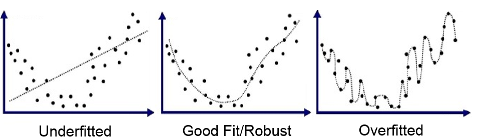
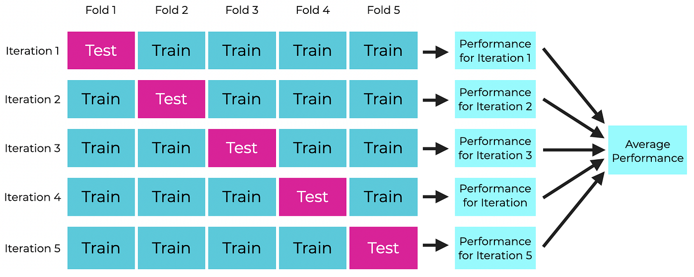
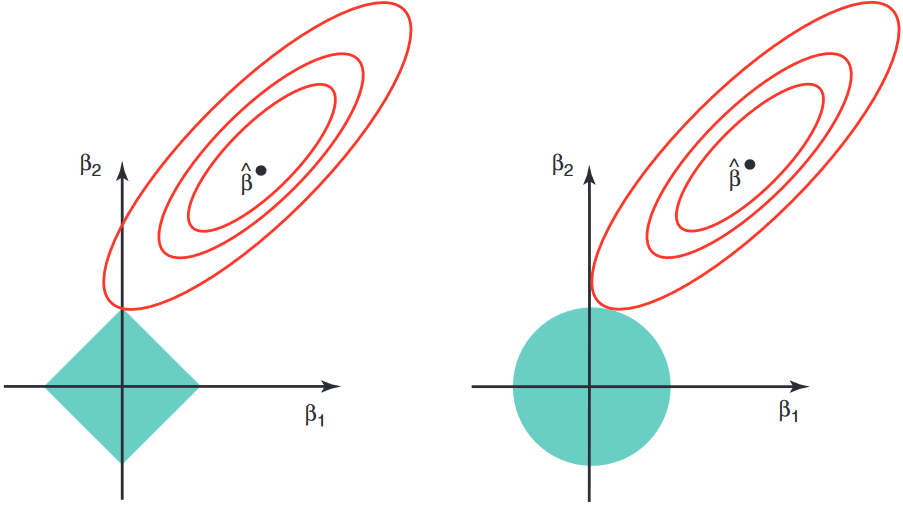
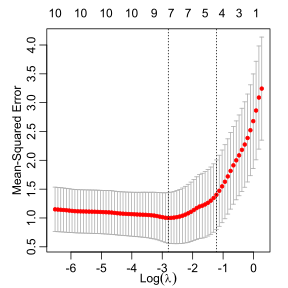

In modeling, the more complex a model, the more prone to overfitting it is
More parameters in model to estimate means more complex shape
If shape too complex, model may start to “memorize” your dataset, which impacts inference and generalizability
To avoid overfitting, need good, robust metrics to detect & discourage overfitting

RSS & overfitting
Note: adding new parameters always lowers training RSS, even if they’re useless!
Suppose you add some \({}+\beta_p\,x_{i,p}\,\) term to a model and refit,
The new RSS can NOT be higher (i.e. worse) than the original RSS since we can always choose \(\hat\beta_p=0\), which ignores the new term and should give the original fit
In theory RSS could stay exactly the same, but in practice RSS always slightly decreases
Recall R²=1–RSS/TSS, thus R² always increases when parameters added
# example: start with previous mtcars model for qsecmodel.mtcars =lm(qsec ~ disp + hp + wt, data = mtcars)summary(model.mtcars)$r.squared
[1] 0.6808292
# now, add a bunch of garbage randomly generated columnsmodel.garbage =update(model.mtcars, . ~ . +rnorm(32))summary(model.garbage)$r.squared
[1] 0.7045965
Train/test split
Easy & model-agnostic way to robustly evaluate performance: use a train/test split!
Split data into portion only used for training and portion only used for testing
80/20 is most common ratio used, but can choose any
Train different models on training set, then compare statistics using testing set
Avoids “memorizing” dataset since testing data NOT seen by model during training!
Doesn’t care about type of model used, since it’s a data-level approach
# example with iris, create 80/20 train test splittrain.rows =sample(nrow(iris), nrow(iris)*0.8)iris.train = iris[train.rows,] ; nrow(iris.train)
[1] 120
iris.test = iris[-train.rows,] ; nrow(iris.test)
[1] 30
# don't forget the , inside [] when splitting!!# now can take this and train/test any models you want
Train/test split example cont.
# define two models to compare and fit on training datamodel1 =lm(Sepal.Length ~ . , data = iris.train)model2 =lm(Sepal.Length ~ . + Petal.Length:Petal.Width, data = iris.train)# model training MSE appears to decrease, but is it reliable?# note RSS must be divided by model DF to get correct training MSEsum(resid(model1)^2)/model1$df.residual
[1] 0.1010403
sum(resid(model2)^2)/model1$df.residual
[1] 0.1006462
# compute MSE using testing dataset instead for objectivity# here, no loss of DF since new data, so mean() used insteadmean((predict(model1,iris.test) - iris.test$Sepal.Length)^2)
Let’s revisit the Pima Indians diabetes dataset from the MASS package. The data is split across Pima.tr and Pima.te dataframes. For some reason, the train.test split used is 38/62 which is unusual. Do the following:
Combine Pima.tr and Pima.te using rbind(), do any necessary tidying (e.g. convert diabetes "Yes"/"No" to 1/0), then re-split into 80/20 train/test sets.
Fit a model with your choice of predictors on the training set and print the summary table.
Using the testing set, compare your model’s predictions to the actual values. Using the standard 0.5 threshold, report the following for your model:
Confusion matrix,
Accuracy, sensitivity, specificity
ROC curve and AUC score
If you have time, try to improve your model by changing the predictors used!
Exercise answers
# combine, process, resplitpima =rbind(Pima.tr, Pima.te) %>%mutate(type =ifelse(type=="Yes",1,0))train.rows =sample(nrow(pima), nrow(pima) *0.8)pima.train = pima[train.rows,]pima.test = pima[-train.rows,]# my lazy choice of model: type ~ .glm.pima =glm(type ~ . , data = pima.train, family = binomial)summary(glm.pima) %>% {capture.output(.)[5:14]} %>%cat(sep="\n")
For small datasets, single train/test split can vary a lot run to run depending on exact rows chosen. To improve robustness, cross-validation (CV) commonly used.
CV is a category of resampling techniques where different splits of a dataset are rotated through training & testing roles
Uses dataset more fully, while still useful for managing overfitting
Many types of CV, e.g. K-fold CV which we will discuss in more detail, leave-one-out CV (assigned reading!), etc..
Most popular method is K-fold CV, where:
Randomly split data into \(K\) different folds (K=5,10 commonly used),
Each fold takes turns being the “testing” set while the rest are used for training,
Finally, performance score (e.g. MSE) from each iteration averaged to get overall score.
Diagram shown on next page for \(K=5\)
5-fold CV diagram

K-fold CV example
Revisiting mtcars, which is a small dataset with 32 rows, let’s use 4-fold CV to get a good MSE estimate of the qsec ~ disp + hp + wt model.
# split manually, fit each, get MSEsn =nrow(mtcars) ; k =4 ; MSEs =rep(NA,k) ; folds =split(sample(n), 1:k)for(i in1:k){ model =lm(qsec ~ disp + hp + wt, data = mtcars[-folds[[i]],]) pred.qsec =predict(model,mtcars[folds[[i]],]) true.qsec = mtcars[folds[[i]],]$qsec MSEs[i] =mean((pred.qsec - true.qsec)^2)}MSEs
[1] 1.1094065 0.5859221 1.0618681 2.7743100
# overall averaged MSEmean(MSEs)
[1] 1.382877
# quick & dirty R way using lmvar package, now archived but installable with:# source("https://pages.stat.wisc.edu/~bwu62/install_lmvar.R")library(lmvar)cv.lm(lm(qsec~disp+hp+wt, data=mtcars, x=T,y=T), k=4)$MSE$mean
[1] 1.296785
Exercise: repeat the above with a different set of predictors, can you do better?
Other statistics: Adjusted R², AIC, BIC
In some cases, it may be easier to compare models using certain readily computed statistics. We’ll cover 3 common ones: the adjusted R², AIC, and BIC. All these statistics work in a similar way: they discourage overfitting by penalizing model complexity.
Let \(k=\) number of estimated parameters in a model (including intercept).
Adjusted R² (higher is better) common for MLR models, defined: \[
R_\adj^2=1-\frac\rss\tss\left(\frac{n-1}{n-k}\right)=1-(1-R^2)\left(\frac{n-1}{n-k}\right)
\]
Akaike Information Criterion (AIC) (lower is better) defined using maximum likelihood \(L\) of model, which for MLR can be related to the RSS: \[
\aic~=~2k-2\log(L)~=~2k+n\log(\rss/n)\quad\text{(for MLR)}
\]
Bayesian Information Criterion (BIC) (lower is better) also defined by \(L\), or RSS for MLR: \[
\bic~=~k\log(n)-2\log(L)~=~k\log(n)+n\log(\rss/n)~~~
\]
Comparing adj R², AIC, BIC
Of the 3, adj R² generally more lenient to complexity, BIC more punishing, and AIC somewhere in between. Note: AIC/BIC only defined up to additive constant
Example: suppose we’re deciding whether to add +gear to qsec ~ disp + hp + wt model for mtcars (\(n=32\)). Below are the two models and their summaries:
extractAIC(model2)[2] # AIC() also works but adds different constant
[1] 6.853237
(BIC2 = k2*log(n)+n*log(rss2/n)) # BIC() also has different constant
[1] 14.18192
Stepwise selection
A common way for variable selection, especially if many possible combinations exist, is to use one of the previous statistics in stepwise selection, where you repeatedly consider which predictor to add (or remove), until none of them significantly improve the model.
Forward stepwise: only consider adding unused variables at each step. In total, max # of models considered (assuming start with null and eventually add all \(p\) predictors): \[1 + p+(p-1)+\cdots+2+1~=~1+\frac{p(p+1)}2\] Note this is much less than the total number of possible models \(2^p\)
Backward stepwise: start with all predictors and successively remove least useful ones. Sometimes not feasible if not enough degrees of freedom (underdetermined).
Bidirectional stepwise (most common): at each step, consider both adding useful unused predictors & removing unimportant ones
Stepwise selection example
Example: starting with null model, use bidirectional stepwise selection using AIC statistic to find best predictors for qsec in mtcars, then check MSE with 4-fold CV.
# intermediate steps hidden since output very long and won't fit on slide,# but you should run it with intermediate steps so you can see the processmodel.step =stepAIC(object =lm(qsec~1,mtcars), # starting modelscope =list(lower=lm(qsec~1,mtcars), # minimum model consideredupper=lm(qsec~.,mtcars)), # maximum model considereddirection ="both", trace =FALSE) # bidirectional, hide stepssummary(model.step) %>% capture.output %>%tail(-8) %>%cat(sep="\n")
Coefficients:
Estimate Std. Error t value Pr(>|t|)
(Intercept) 19.501869 1.659365 11.753 6.64e-12 ***
vs 1.311659 0.548404 2.392 0.02429 *
hp -0.011932 0.004196 -2.843 0.00858 **
wt 0.809294 0.282868 2.861 0.00822 **
cyl -0.423159 0.240087 -1.763 0.08973 .
am -1.137484 0.498618 -2.281 0.03096 *
---
Signif. codes: 0 '***' 0.001 '**' 0.01 '*' 0.05 '.' 0.1 ' ' 1
Residual standard error: 0.7674 on 26 degrees of freedom
Multiple R-squared: 0.8453, Adjusted R-squared: 0.8156
F-statistic: 28.42 on 5 and 26 DF, p-value: 9.303e-10
Another popular choice is shrinkage estimators like LASSO & Ridge, which “shrink” coefficients towards zero, also penalizing complexity. Also often called regularization.
Both work by adding \(+\lambda\sum f(\beta_j)\) penalty to loss for some function \(f\)
\(\lambda>0\) is some tuning parameter that’s empirically chosen for each dataset
Least absolute shrinkage and selection operator (LASSO) uses \(+\lambda\sum|\beta_j|\)
Difference: LASSO tends to remove unimportant predictors, ridge does not!
Both equivalent to minimizing RSS subject to geometric constraints
(diagram on next page)
LASSO/Ridge diagram

LASSO example using glmnet
library(glmnet)# create input model matrix X and column of responses Yx =model.matrix(qsec ~ . , data=mtcars)[,-1] ; y = mtcars$qsec# fit lasso using default lambda values (note: use alpha=0 for Ridge)lm.lasso =glmnet(x,y,alpha=1)# use CV to choose which lambda gives lowest MSE, then print its logcv.out =cv.glmnet(x,y,alpha=1) ; log(lambda.best <- cv.out$lambda.min)
[1] -2.800476
plot(cv.out, sign.lambda=1)

# get MSE for optimal lambdacv.out$cvm[cv.out$lambda == lambda.best]
[1] 1.00023
# get best fit coefficients ("." means variable dropped)coef(lm.lasso, s=lambda.best)
11 x 1 sparse Matrix of class "dgCMatrix"
s=0.06078111
(Intercept) 19.860145364
mpg .
cyl -0.311579222
disp .
hp -0.008896437
drat .
wt 0.557576146
vs 1.377715559
am -0.855401603
gear -0.157541593
carb -0.087706208
Exercise: repeat example with ridge regression (exact same except use alpha=0)